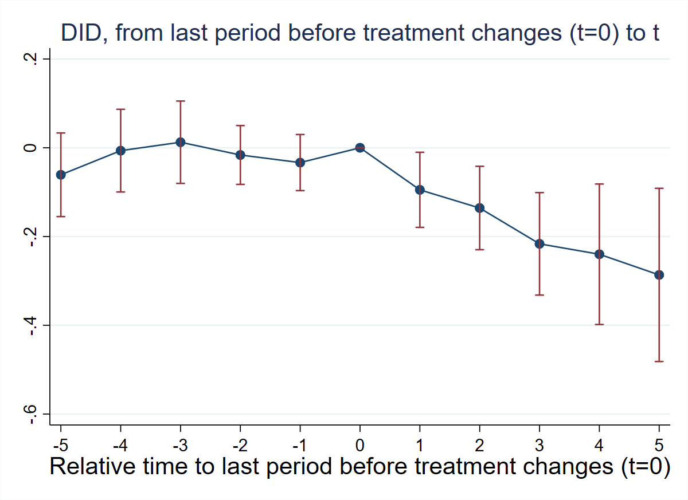
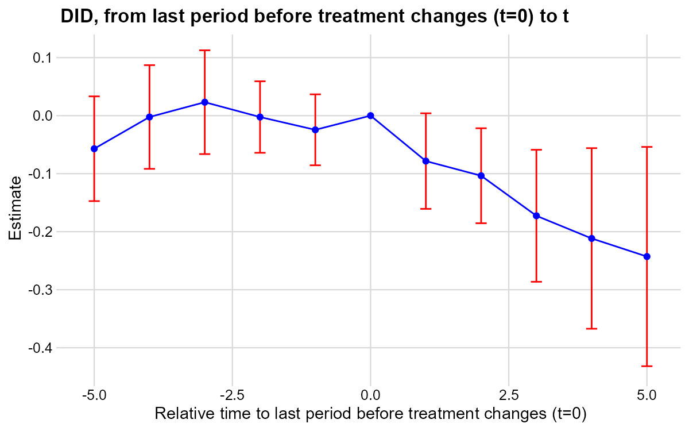
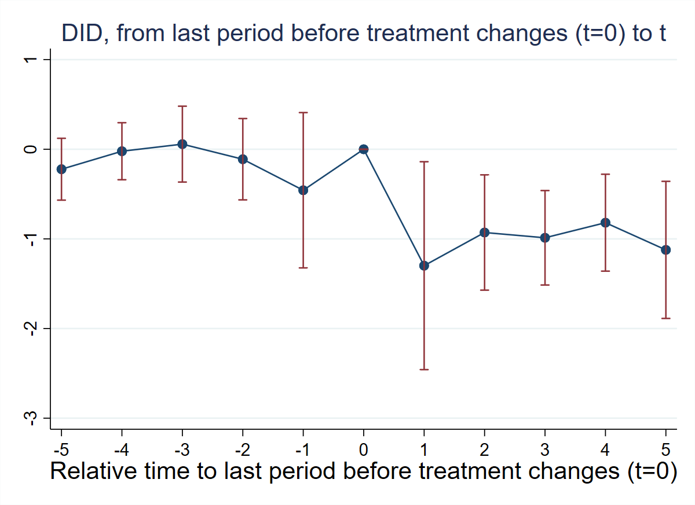
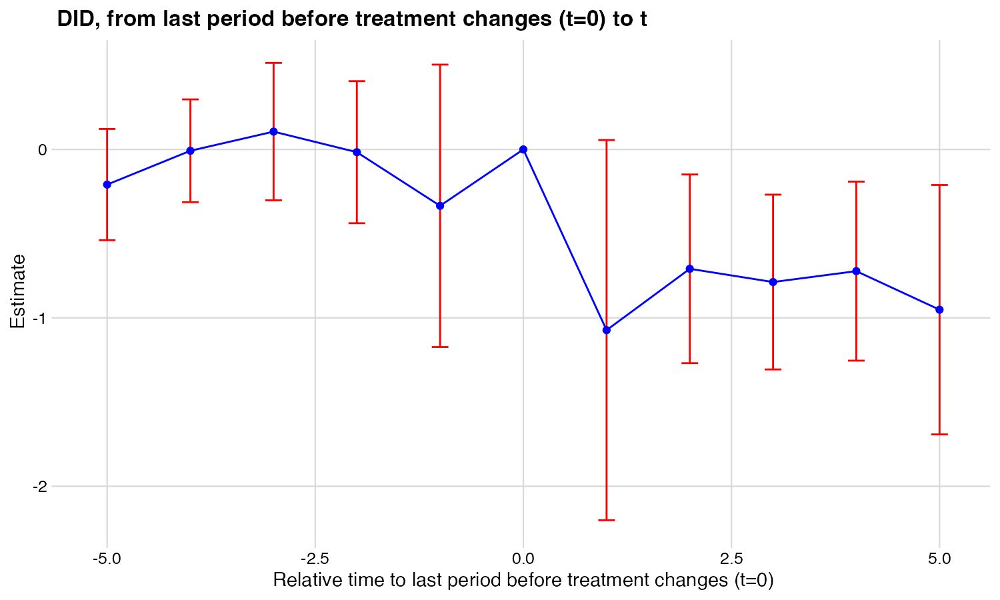
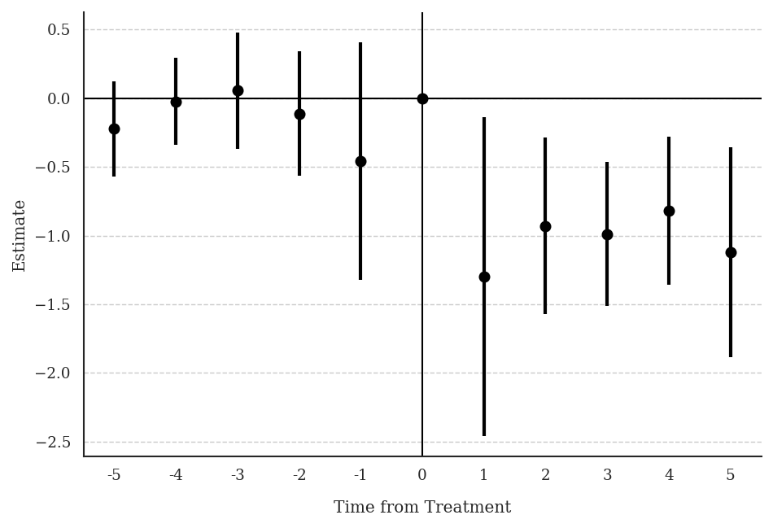

2 Chapter 2: East et al. (2023) — Prenatal Medicaid and Low Birth Weight
Research Question: How does prenatal Medicaid expansion affect the share of low-birth-weight (LBW) infants?
Data: State-year panel. Treatment newsimeli is the simulated prenatal Medicaid eligibility rate — continuous and absorbing. Outcome: lbw_detrend81 (% LBW infants, net of state-specific pre-treatment linear trend).
2.1 T4: Verify Continuous Treatment in Period 1
* ssc install did_multiplegt_dyn, replace
copy "https://raw.githubusercontent.com/anzonyquispe/did_book/main/did_applied_book/data/east_et_al_2023.dta" "east_et_al_2023.dta", replace
use "east_et_al_2023.dta", clear
tab newsimeli if dob_y_p == 1975 newsimeli | Freq. Percent Cum.
------------+-----------------------------------
.0427696 | 1 2.00 2.00
.0435282 | 1 2.00 4.00
.0538973 | 1 2.00 6.00
.0552416 | 1 2.00 8.00
.0580446 | 1 2.00 10.00
.0590862 | 1 2.00 12.00
.0598038 | 1 2.00 14.00
.065449 | 1 2.00 16.00
.0698274 | 1 2.00 18.00
.0710992 | 1 2.00 20.00
.0711747 | 1 2.00 22.00
.0725171 | 1 2.00 24.00
.0756276 | 1 2.00 26.00
.0775356 | 1 2.00 28.00
.0826772 | 1 2.00 30.00
.083517 | 1 2.00 32.00
.0871058 | 1 2.00 34.00
.0888268 | 1 2.00 36.00
.0929196 | 1 2.00 38.00
.0931799 | 1 2.00 40.00
.1006551 | 1 2.00 42.00
.1007792 | 1 2.00 44.00
.1015849 | 1 2.00 46.00
.1038133 | 1 2.00 48.00
.1041829 | 1 2.00 50.00
.1087641 | 1 2.00 52.00
.1092862 | 1 2.00 54.00
.1114295 | 1 2.00 56.00
.1138055 | 1 2.00 58.00
.1214893 | 1 2.00 60.00
.1217976 | 1 2.00 62.00
.1221933 | 1 2.00 64.00
.1243087 | 1 2.00 66.00
.1318409 | 1 2.00 68.00
.1325508 | 1 2.00 70.00
.1402154 | 1 2.00 72.00
.1486803 | 1 2.00 74.00
.1520717 | 1 2.00 76.00
.154815 | 1 2.00 78.00
.169334 | 1 2.00 80.00
.1700918 | 1 2.00 82.00
.1719924 | 1 2.00 84.00
.1795388 | 1 2.00 86.00
.1812458 | 1 2.00 88.00
.185354 | 1 2.00 90.00
.1957995 | 1 2.00 92.00
.198558 | 1 2.00 94.00
.2038389 | 1 2.00 96.00
.2061362 | 1 2.00 98.00
.2127634 | 1 2.00 100.00
------------+-----------------------------------
Total | 50 100.00All 50 states have different values of newsimeli in 1975 — confirming continuous treatment in period 1.
# install.packages(c("DIDmultiplegtDYN", "polars", "haven", "dplyr"))
library(haven)
library(dplyr)
library(DIDmultiplegtDYN)
library(polars)
load(url("https://raw.githubusercontent.com/anzonyquispe/did_book/main/did_applied_book/data/east_et_al_2023.RData"))
df %>%
filter(dob_y_p == 1975) %>%
count(newsimeli) %>%
rename("Freq." = n) %>%
mutate(Percent = 2.0, Cum. = cumsum(Percent)) %>%
print(n = 50)# A tibble: 50 × 4
newsimeli Freq. Percent Cum.
<dbl> <int> <dbl> <dbl>
1 0.0428 1 2 2
2 0.0435 1 2 4
3 0.0539 1 2 6
4 0.0552 1 2 8
5 0.0580 1 2 10
6 0.0591 1 2 12
7 0.0598 1 2 14
8 0.0654 1 2 16
9 0.0698 1 2 18
10 0.0711 1 2 20
11 0.0712 1 2 22
12 0.0725 1 2 24
13 0.0756 1 2 26
14 0.0775 1 2 28
15 0.0827 1 2 30
16 0.0835 1 2 32
17 0.0871 1 2 34
18 0.0888 1 2 36
19 0.0929 1 2 38
20 0.0932 1 2 40
21 0.101 1 2 42
22 0.101 1 2 44
23 0.102 1 2 46
24 0.104 1 2 48
25 0.104 1 2 50
26 0.109 1 2 52
27 0.109 1 2 54
28 0.111 1 2 56
29 0.114 1 2 58
30 0.121 1 2 60
31 0.122 1 2 62
32 0.122 1 2 64
33 0.124 1 2 66
34 0.132 1 2 68
35 0.133 1 2 70
36 0.140 1 2 72
37 0.149 1 2 74
38 0.152 1 2 76
39 0.155 1 2 78
40 0.169 1 2 80
41 0.170 1 2 82
42 0.172 1 2 84
43 0.180 1 2 86
44 0.181 1 2 88
45 0.185 1 2 90
46 0.196 1 2 92
47 0.199 1 2 94
48 0.204 1 2 96
49 0.206 1 2 98
50 0.213 1 2 100All 50 states have different values — confirming continuous treatment in period 1.
# pip install did-multiplegt-dyn pandas pyarrow
import pandas as pd
from did_multiplegt_dyn import did_multiplegt_dyn
df = pd.read_parquet("https://raw.githubusercontent.com/anzonyquispe/did_book/main/did_applied_book/data/east_et_al_2023.parquet")
tab = (df.loc[df["dob_y_p"] == 1975, "newsimeli"]
.value_counts()
.reset_index()
.rename(columns={"count": "Freq."})
.sort_values("newsimeli")
.reset_index(drop=True))
tab["Percent"] = 2.0
tab["Cum."] = tab["Percent"].cumsum()
print(tab.to_string(index=False))
print(f"\nTotal: {tab['Freq.'].sum()}") newsimeli Freq. Percent Cum.
0.042770 1 2.0 2.0
0.043528 1 2.0 4.0
0.053897 1 2.0 6.0
0.055242 1 2.0 8.0
0.058045 1 2.0 10.0
0.059086 1 2.0 12.0
0.059804 1 2.0 14.0
0.065449 1 2.0 16.0
0.069827 1 2.0 18.0
0.071099 1 2.0 20.0
0.071175 1 2.0 22.0
0.072517 1 2.0 24.0
0.075628 1 2.0 26.0
0.077536 1 2.0 28.0
0.082677 1 2.0 30.0
0.083517 1 2.0 32.0
0.087106 1 2.0 34.0
0.088827 1 2.0 36.0
0.092920 1 2.0 38.0
0.093180 1 2.0 40.0
0.100655 1 2.0 42.0
0.100779 1 2.0 44.0
0.101585 1 2.0 46.0
0.103813 1 2.0 48.0
0.104183 1 2.0 50.0
0.108764 1 2.0 52.0
0.109286 1 2.0 54.0
0.111429 1 2.0 56.0
0.113805 1 2.0 58.0
0.121489 1 2.0 60.0
0.121798 1 2.0 62.0
0.122193 1 2.0 64.0
0.124309 1 2.0 66.0
0.131841 1 2.0 68.0
0.132551 1 2.0 70.0
0.140215 1 2.0 72.0
0.148680 1 2.0 74.0
0.152072 1 2.0 76.0
0.154815 1 2.0 78.0
0.169334 1 2.0 80.0
0.170092 1 2.0 82.0
0.171992 1 2.0 84.0
0.179539 1 2.0 86.0
0.181246 1 2.0 88.0
0.185354 1 2.0 90.0
0.195800 1 2.0 92.0
0.198558 1 2.0 94.0
0.203839 1 2.0 96.0
0.206136 1 2.0 98.0
0.212763 1 2.0 100.0
Total: 50All 50 states have different values — confirming continuous treatment in period 1.
2.2 T5: Non-Normalized Event-Study Effects
* ssc install did_multiplegt_dyn, replace
copy "https://raw.githubusercontent.com/anzonyquispe/did_book/main/did_applied_book/data/east_et_al_2023.dta" "east_et_al_2023.dta", replace
use "east_et_al_2023.dta", clear
global stcontrols stmarried stblack stother sthsdrop ///
sthsgrad stsomecoll pop0_4 pop5_17 pop18_24 pop25_44 ///
pop45_64 urate incpc maxafdc abortconsent abortmedr
did_multiplegt_dyn lbw_detrend81 plborn dob_y_p newsimeli, ///
effects(5) placebo(5) continuous(1) ///
controls($stcontrols) weight(births) effects_equal("all")--------------------------------------------------------------------------------
Estimation of treatment effects: Event-study effects
--------------------------------------------------------------------------------
| Estimate SE LB CI UB CI N Switchers
-------------+------------------------------------------------------------------
Effect_1 | -.0947772 .0431779 -.1794043 -.0101501 234 28
Effect_2 | -.1357354 .0479484 -.2297126 -.0417581 209 28
Effect_3 | -.2164912 .0589289 -.3319896 -.1009928 187 28
Effect_4 | -.2399434 .0807875 -.398284 -.0816028 176 28
Effect_5 | -.2865485 .0995835 -.4817286 -.0913684 138 21
--------------------------------------------------------------------------------
Test of joint nullity of the effects : p-value = .01356529
Test of equality of the effects : p-value = .18570771
Av_tot_eff | -2.674364 .7711151 -4.185722 -1.163007 405 133
Average number of time periods over which a treatment's effect is accumulated = 2.8379
Placebo_1 | -.0333622 .0322533 -.0965775 .029853 234 28
Placebo_2 | -.0162464 .0338256 -.0825434 .0500506 209 28
Placebo_3 | .0125248 .0473315 -.0802431 .1052928 187 28
Placebo_4 | -.0064571 .0475258 -.0996058 .0866917 176 28
Placebo_5 | -.0608374 .0480836 -.1550795 .0334047 106 18
--------------------------------------------------------------------------------
Test of joint nullity of the placebos : p-value = .72098785
# install.packages(c("DIDmultiplegtDYN", "polars"))
library(DIDmultiplegtDYN)
library(polars)
load(url("https://raw.githubusercontent.com/anzonyquispe/did_book/main/did_applied_book/data/east_et_al_2023.RData"))
stcontrols <- c("stmarried", "stblack", "stother", "sthsdrop", "sthsgrad",
"stsomecoll", "pop0_4", "pop5_17", "pop18_24", "pop25_44",
"pop45_64", "urate", "incpc", "maxafdc", "abortconsent", "abortmedr")
res_t5 <- did_multiplegt_dyn(
df = df,
outcome = "lbw_detrend81",
group = "plborn",
time = "dob_y_p",
treatment = "newsimeli",
effects = 5,
placebo = 5,
continuous = 1,
controls = stcontrols,
weight = "births",
effects_equal = "all"
)
print(res_t5)
res_t5$plot----------------------------------------------------------------------
Estimation of treatment effects: Event-study effects
----------------------------------------------------------------------
Estimate SE LB CI UB CI N Switchers
Effect_1 -0.09478 0.04318 -0.17940 -0.01015 234 28
Effect_2 -0.13574 0.04795 -0.22971 -0.04176 209 28
Effect_3 -0.21649 0.05893 -0.33199 -0.10099 187 28
Effect_4 -0.23994 0.08079 -0.39828 -0.08160 176 28
Effect_5 -0.28655 0.09958 -0.48173 -0.09137 138 21
Test of joint nullity of the effects : p-value = 0.0136
Test of equality of the effects : p-value = 0.1857
Av_tot_eff | -2.67436 0.77112 -4.18572 -1.16301 405 133
Average number of time periods over which a treatment effect is accumulated: 2.8379
Placebo_1 -0.03336 0.03225 -0.09658 0.02985 234 28
Placebo_2 -0.01625 0.03383 -0.08254 0.05005 209 28
Placebo_3 0.01252 0.04733 -0.08024 0.10529 187 28
Placebo_4 -0.00646 0.04753 -0.09961 0.08669 176 28
Placebo_5 -0.06084 0.04808 -0.15508 0.03340 106 18
Test of joint nullity of the placebos : p-value = 0.7210
# pip install did-multiplegt-dyn pandas pyarrow
import pandas as pd
from did_multiplegt_dyn import did_multiplegt_dyn
df = pd.read_parquet("https://raw.githubusercontent.com/anzonyquispe/did_book/main/did_applied_book/data/east_et_al_2023.parquet")
stcontrols = ["stmarried", "stblack", "stother", "sthsdrop", "sthsgrad",
"stsomecoll", "pop0_4", "pop5_17", "pop18_24", "pop25_44",
"pop45_64", "urate", "incpc", "maxafdc", "abortconsent", "abortmedr"]
res_t5 = did_multiplegt_dyn(
df = df,
outcome = "lbw_detrend81",
group = "plborn",
time = "dob_y_p",
treatment = "newsimeli",
effects = 5,
placebo = 5,
continuous = 1,
controls = stcontrols,
weight = "births",
effects_equal = "all"
)
print(res_t5)
res_t5.plot----------------------------------------------------------------------
Estimation of treatment effects: Event-study effects
----------------------------------------------------------------------
Estimate SE LB CI UB CI N Switchers
Effect_1 -0.094777 0.043178 -0.179404 -0.010150 234 28
Effect_2 -0.135735 0.047948 -0.229713 -0.041758 209 28
Effect_3 -0.216491 0.058929 -0.331990 -0.100993 187 28
Effect_4 -0.239943 0.080788 -0.398284 -0.081603 176 28
Effect_5 -0.286549 0.099584 -0.481729 -0.091368 138 21
Test of joint nullity of the effects : p-value = 0.013565
Test of equality of the effects : p-value = 0.185708
Av_tot_eff | -2.674365 0.771115 -4.185722 -1.163007 405 133
Average number of time periods over which a treatment's effect is accumulated = 2.8379
Placebo_1 -0.033362 0.032253 -0.096578 0.029853 234 28
Placebo_2 -0.016246 0.033826 -0.082543 0.050051 209 28
Placebo_3 0.012525 0.047332 -0.080243 0.105293 187 28
Placebo_4 -0.006457 0.047526 -0.099606 0.086692 176 28
Placebo_5 -0.060837 0.048084 -0.155080 0.033405 106 18
Test of joint nullity of the placebos : p-value = 0.720988Interpretation: A large increase in prenatal Medicaid eligibility significantly reduces the LBW rate. Effects grow with exposure length (from −0.09 to −0.29 in Stata/Python). Pre-trends are small and jointly insignificant, supporting the parallel-trends assumption.
2.3 T6: Normalized Event-Study Effects
* ssc install did_multiplegt_dyn, replace
copy "https://raw.githubusercontent.com/anzonyquispe/did_book/main/did_applied_book/data/east_et_al_2023.dta" "east_et_al_2023.dta", replace
use "east_et_al_2023.dta", clear
global stcontrols stmarried stblack stother sthsdrop ///
sthsgrad stsomecoll pop0_4 pop5_17 pop18_24 pop25_44 ///
pop45_64 urate incpc maxafdc abortconsent abortmedr
did_multiplegt_dyn lbw_detrend81 plborn dob_y_p newsimeli, ///
effects(5) placebo(5) continuous(1) ///
controls($stcontrols) weight(births) normalized normalized_weights ///
effects_equal("all")--------------------------------------------------------------------------------
Estimation of treatment effects: Event-study effects
--------------------------------------------------------------------------------
| Estimate SE LB CI UB CI N Switchers
-------------+------------------------------------------------------------------
Effect_1 | -1.298867 .5917281 -2.458633 -.1391013 234 28
Effect_2 | -.9288246 .3281068 -1.571902 -.2857471 209 28
Effect_3 | -.9876244 .2688312 -1.514524 -.4607251 187 28
Effect_4 | -.8192267 .2758287 -1.359841 -.2786122 176 28
Effect_5 | -1.122649 .3901516 -1.887333 -.3579662 138 21
--------------------------------------------------------------------------------
Test of joint nullity of the effects : p-value = .01356528
Test of equality of the effects : p-value = .58100394
| ℓ=1 ℓ=2 ℓ=3 ℓ=4 ℓ=5
k=0 | 1.0000 0.5000 0.3333 0.2500 0.2000
k=1 | . 0.5000 0.3333 0.2500 0.2000
k=2 | . . 0.3333 0.2500 0.2000
k=3 | . . . 0.2500 0.2000
k=4 | . . . . 0.2000
Total | 1.0000 1.0000 1.0000 1.0000 1.0000
# install.packages(c("DIDmultiplegtDYN", "polars"))
library(DIDmultiplegtDYN)
library(polars)
load(url("https://raw.githubusercontent.com/anzonyquispe/did_book/main/did_applied_book/data/east_et_al_2023.RData"))
stcontrols <- c("stmarried", "stblack", "stother", "sthsdrop", "sthsgrad",
"stsomecoll", "pop0_4", "pop5_17", "pop18_24", "pop25_44",
"pop45_64", "urate", "incpc", "maxafdc", "abortconsent", "abortmedr")
res_t6 <- did_multiplegt_dyn(
df = df,
outcome = "lbw_detrend81",
group = "plborn",
time = "dob_y_p",
treatment = "newsimeli",
effects = 5,
placebo = 5,
continuous = 1,
controls = stcontrols,
weight = "births",
normalized = TRUE,
normalized_weights = TRUE,
effects_equal = "all"
)
print(res_t6)
res_t6$plot----------------------------------------------------------------------
Estimation of treatment effects: Event-study effects
----------------------------------------------------------------------
Estimate SE LB CI UB CI N Switchers
Effect_1 -1.29887 0.59173 -2.45863 -0.13910 234 28
Effect_2 -0.92882 0.32811 -1.57190 -0.28575 209 28
Effect_3 -0.98762 0.26883 -1.51452 -0.46072 187 28
Effect_4 -0.81923 0.27583 -1.35984 -0.27861 176 28
Effect_5 -1.12265 0.39015 -1.88733 -0.35797 138 21
Test of joint nullity of the effects : p-value = 0.0136
Test of equality of the effects : p-value = 0.5810
Av_tot_eff | -2.67436 0.77112 -4.18572 -1.16301 405 133
Average number of time periods over which a treatment effect is accumulated: 2.8379
Placebo_1 -0.45721 0.44201 -1.32354 0.40912 234 28
Placebo_2 -0.11117 0.23147 -0.56484 0.34249 209 28
Placebo_3 0.05714 0.21592 -0.36607 0.48034 187 28
Placebo_4 -0.02205 0.16226 -0.34008 0.29599 176 28
Placebo_5 -0.22271 0.17602 -0.56770 0.12228 106 18
Test of joint nullity of the placebos : p-value = 0.7210
------------------------------------------------------------
Weights on treatment lags
------------------------------------------------------------
ℓ=1 ℓ=2 ℓ=3 ℓ=4 ℓ=5
k=0 1.000 0.500 0.333 0.250 0.200
k=1 NA 0.500 0.333 0.250 0.200
k=2 NA NA 0.333 0.250 0.200
k=3 NA NA NA 0.250 0.200
k=4 NA NA NA NA 0.200
Total 1.000 1.000 1.000 1.000 1.000
# pip install did-multiplegt-dyn pandas pyarrow
import pandas as pd
from did_multiplegt_dyn import did_multiplegt_dyn
df = pd.read_parquet("https://raw.githubusercontent.com/anzonyquispe/did_book/main/did_applied_book/data/east_et_al_2023.parquet")
stcontrols = ["stmarried", "stblack", "stother", "sthsdrop", "sthsgrad",
"stsomecoll", "pop0_4", "pop5_17", "pop18_24", "pop25_44",
"pop45_64", "urate", "incpc", "maxafdc", "abortconsent", "abortmedr"]
res_t6 = did_multiplegt_dyn(
df = df,
outcome = "lbw_detrend81",
group = "plborn",
time = "dob_y_p",
treatment = "newsimeli",
effects = 5,
placebo = 5,
continuous = 1,
controls = stcontrols,
weight = "births",
normalized = True,
normalized_weights = True,
effects_equal = "all"
)
print(res_t6)
res_t6.plot================================================================================
Weights of Normalized Effects on Current and Lagged Treatments
================================================================================
l=1 l=2 l=3 l=4 l=5
--------------------------------------------------------------------------------
k=0 1.0000 1.0000 1.0000 1.0000 1.0000
k=1 0.0000 1.0000 1.0000 1.0000 1.0000
k=2 0.0000 0.0000 1.0000 1.0000 1.0000
k=3 0.0000 0.0000 0.0000 1.0000 1.0000
k=4 0.0000 0.0000 0.0000 0.0000 1.0000
--------------------------------------------------------------------------------
Total 1.0000 2.0000 3.0000 4.0000 5.0000
================================================================================
Estimation of treatment effects: Event-study effects
================================================================================
Block Estimate SE LB CI UB CI N Switchers N.w Switchers.w
Effect_1 -1.298867 0.591728 -2.458633 -0.139101 234.0 28.0 17895714.0 1774650.0
Effect_2 -0.928825 0.328107 -1.571902 -0.285747 209.0 28.0 16559188.0 1756460.0
Effect_3 -0.987624 0.268831 -1.514524 -0.460725 187.0 28.0 15360486.0 1755764.0
Effect_4 -0.819227 0.275829 -1.359841 -0.278612 176.0 28.0 14705169.0 1768408.0
Effect_5 -1.122649 0.390152 -1.887332 -0.357966 138.0 21.0 11517655.0 1119166.0
Average_Total_Effect -2.674365 0.771115 -4.185723 -1.163007 405.0 133.0 30260564.0 8174448.0
Placebo_1 -0.457210 0.442013 -1.323539 0.409119 234.0 28.0 17895714.0 1774650.0
Placebo_2 -0.111173 0.231466 -0.564837 0.342492 209.0 28.0 16559188.0 1756460.0
Placebo_3 0.057138 0.215924 -0.366066 0.480342 187.0 28.0 15360486.0 1755764.0
Placebo_4 -0.022046 0.162265 -0.340079 0.295987 176.0 28.0 14705169.0 1768408.0
Placebo_5 -0.222708 0.176020 -0.567700 0.122285 106.0 18.0 8718569.0 824485.0
================================================================================
Test of joint nullity of the effects: p-value = 0.013565
Test of joint nullity of the placebos: p-value = 0.720988
Test of equality of the effects: p-value = 0.581004
Interpretation: A 1 percentage point increase in prenatal Medicaid eligibility reduces the LBW rate by ~1 percentage point. One cannot reject equality of effects (p = 0.58).